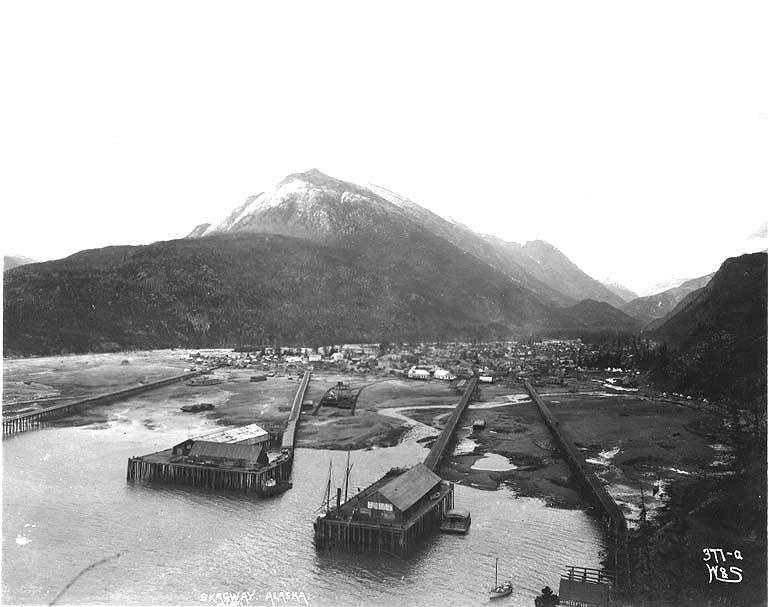
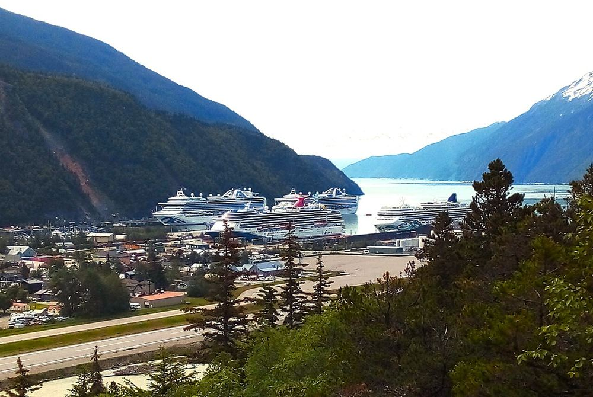

Directory / Southeast Alaska / Skagway, AK
Skagway tides — Small Boat Harbor & Taiya Inlet
High and low tides for the coming week from NOAA station 9452400 (Skagway, Taiya Inlet — 59.4508, -135.3280). Times are local (AKST/AKDT). Heights are feet above Mean Lower Low Water (MLLW). Skagway sits at the very head of the Inside Passage, where Taiya Inlet ends at the mouth of the Skagway River, about 100 miles north of Juneau by way of Lynn Canal. The Municipality of Skagway runs the small boat harbor and the municipal Port of Skagway terminals; the White Pass & Yukon Route owns the Railroad Dock. Summer brings big cruise ships to the docks next to the harbor. In winter the town is quiet, and the South Klondike Highway is the year-round road link to Whitehorse.
A 24-ft tide drop, a trailer haul-out & Lynn Canal north winds
The tide swing. Skagway’s tides are big even for Southeast Alaska. Mean Higher High Water is about 16.7 ft above MLLW (great diurnal range 16.73 ft, NOAA 2012–2016 epoch). In the NOAA predictions fetched 2026-11-19, Wednesday, November 25, 2026 has a 20.2 ft high at 12:56 PM and then a −4.3 ft low at 7:37 PM. That is a drop of about 24.5 ft in under seven hours, or about 3.7 ft an hour on average. Christmas Eve is bigger still: 20.2 ft at 12:46 PM to −4.6 ft at 7:27 PM (about 24.8 ft). Minus tides come every evening Nov 22–29, Dec 6–12, and from Dec 21, all between about 5 PM and 11 PM. Leave plenty of slack in dock and anchor lines, and check the ramp before you launch or haul on those evenings.
Haul-out & grid. Skagway has no travelift. The city harbor hauls shallow-draft boats up to 20 tons and 40 ft with a hydraulic trailer. Bigger boats use the tidal grid. There is a 2-ton crane on the ferry float, a pressure washer to rent, upland storage, and a three-bay Marine Maintenance Facility (bay rental $50/day Oct–Mar, $33/day Apr–Sep). In the next five weeks the best afternoon grid lows are about 2.2 ft at 3:53 PM Fri Nov 20, 2.4 ft at 3:15 PM Thu Dec 3, and 2.0 ft at 3:10 PM Sat Dec 19. Those come near the early winter sunset, so plan the light. Call the harbormaster (907-983-2628) first.
Weather & fuel. The api.weather.gov zone lookup at the tide station and the harbor returns PKZ012 Northern Lynn Canal. The run south toward Juneau falls in PKZ013 Southern Lynn Canal. In the forecast issued 7:13 PM AKST Thu Nov 19, 2026, Northern Lynn Canal turned north 20 kt Monday and 25 kt Tuesday with seas to 5 ft. North winds that funnel down Taiya Inlet and Lynn Canal are what to watch here in winter, so check the live forecasts below and the Eldred Rock camera before you head down-canal. Petro Marine runs the floating fuel dock on the east side of the small boat harbor (gasoline and diesel; 907-983-2259). Call ahead in winter.
Computed from NOAA CO-OPS hi/lo predictions for 9452400 (2026-11-20 through 2026-12-24) and station datums (2012–2016 epoch; MHHW 18.71 ft and MLLW 1.98 ft above station datum), the NWS Juneau coastal waters forecast text and api.weather.gov zone lookups at 59.4508,-135.3280 and 59.4498,-135.3272, the Municipality of Skagway harbor and harbor-rates pages, and the Municipality’s Petro Marine fuel-facility site assessment, all checked 2026-11-19. Not for navigation.
Skagway then & now
Historic

.jpeg){kind=link}
Current


Official NOAA predictions Station home NOAA chart viewer View on Windy
Port Sponsor — Skagway, AK
Top placement for fuel, charters, lodges, outfitters, and marine businesses at the head of Lynn Canal.
$25–$50 / month
Tide data: NOAA CO-OPS station 9452400, predictions (hi/lo, MLLW, local standard/daylight time). Refreshed with each nightly build; the marine-weather snapshot time below shows the latest fetch. NOAA lists current-prediction station SEA0824 about 1.6 km away; see NOAA current predictions for Taiya Inlet and Lynn Canal.
Tuesday, November 24, 2026
| Tide | Time (local) | Height (MLLW) |
|---|---|---|
| High | 12:29 AM | 16.3 ft |
| Low | 6:12 AM | 2.7 ft |
| High | 12:11 PM | 19.9 ft |
| Low | 6:52 PM | -4.0 ft |
Wednesday, November 25, 2026
| Tide | Time (local) | Height (MLLW) |
|---|---|---|
| High | 1:16 AM | 16.7 ft |
| Low | 6:58 AM | 2.7 ft |
| High | 12:56 PM | 20.2 ft |
| Low | 7:37 PM | -4.3 ft |
Thursday, November 26, 2026
| Tide | Time (local) | Height (MLLW) |
|---|---|---|
| High | 2:04 AM | 16.7 ft |
| Low | 7:44 AM | 2.8 ft |
| High | 1:42 PM | 20.1 ft |
| Low | 8:23 PM | -4.0 ft |
Friday, November 27, 2026
| Tide | Time (local) | Height (MLLW) |
|---|---|---|
| High | 2:53 AM | 16.5 ft |
| Low | 8:33 AM | 3.2 ft |
| High | 2:31 PM | 19.4 ft |
| Low | 9:11 PM | -3.2 ft |
Saturday, November 28, 2026
| Tide | Time (local) | Height (MLLW) |
|---|---|---|
| High | 3:44 AM | 16.0 ft |
| Low | 9:26 AM | 3.7 ft |
| High | 3:23 PM | 18.1 ft |
| Low | 10:02 PM | -2.0 ft |
Sunday, November 29, 2026
| Tide | Time (local) | Height (MLLW) |
|---|---|---|
| High | 4:40 AM | 15.5 ft |
| Low | 10:24 AM | 4.2 ft |
| High | 4:21 PM | 16.5 ft |
| Low | 10:57 PM | -0.5 ft |
Monday, November 30, 2026
| Tide | Time (local) | Height (MLLW) |
|---|---|---|
| High | 5:40 AM | 15.1 ft |
| Low | 11:32 AM | 4.5 ft |
| High | 5:28 PM | 14.9 ft |
| Low | 11:57 PM | 1.0 ft |
Tuesday, December 1, 2026
| Tide | Time (local) | Height (MLLW) |
|---|---|---|
| High | 6:43 AM | 15.0 ft |
| Low | 12:48 PM | 4.4 ft |
| High | 6:45 PM | 13.6 ft |
Marine weather & cameras
NWS marine forecast — Northern Lynn Canal (PKZ012)
Issued 742 PM AKST Mon Nov 23 2026. Snapshot fetched 2026-11-23 21:27 AKST from NWS text product. Official zone forecast · Raw text
...GALE WARNING THROUGH LATE TONIGHT...
- .TONIGHT...N wind 35 kt. Gusts to 50 kt. Seas 7 ft. Rain and snow.
- .TUE...N wind 25 kt increasing to 30 kt in the afternoon. Seas 6 ft.
- .TUE NIGHT...N wind 25 kt. Seas 5 ft. Snow.
- .WED...N wind 20 kt. Seas 4 ft.
- .WED NIGHT...N wind 25 kt. Seas 5 ft.
- .THU...N wind 25 kt. Seas 5 ft.
- .FRI...SE wind 15 kt. Seas 3 ft.
- .SAT...S wind 15 kt. Seas 3 ft.
NWS marine forecast — Southern Lynn Canal (PKZ013)
Issued 742 PM AKST Mon Nov 23 2026. Snapshot fetched 2026-11-23 21:27 AKST from NWS text product. Official zone forecast · Raw text
...SMALL CRAFT ADVISORY THROUGH TUESDAY...
- .TONIGHT...N wind 30 kt. Gusts to 45 kt. Near Point Couverden, N 35 kt. Gusts to 50 kt. Seas 5 ft. Rain and snow.
- .TUE...N wind 25 kt. Seas 5 ft.
- .TUE NIGHT...N wind 20 kt. Seas 4 ft. Rain.
- .WED...N wind 20 kt. Seas 4 ft.
- .WED NIGHT...N wind 15 kt. Seas 3 ft.
- .THU...N wind 15 kt. Seas 3 ft.
- .FRI...SE wind 10 kt. Seas 2 ft or less.
- .SAT...SE wind 10 kt. Seas 2 ft or less.
Nearby NDBC observation — Skagway (SKTA2, NOAA 9452400, Taiya Inlet)
1005.6 hPa
Observation time 2026-11-23 20:48 AKST (converted to AKST). Attribution: NOAA NDBC station SKTA2. Snapshot fetched 2026-11-23 21:27 AKST.
Nearby NDBC observation — Skagway Harbor (SKXA2, Marine Exchange of Alaska)
wind 20°, 13 kt, gust 20 kt, air 33°F
Observation time 2026-11-23 21:02 AKST (converted to AKST). Attribution: NOAA NDBC station SKXA2. Snapshot fetched 2026-11-23 21:27 AKST.
Nearby NDBC observation — Skagway Ore Dock (SKDA2)
wind 360°, 15 kt, gust 25 kt, air 34°F, 1005.5 hPa
Observation time 2026-11-23 21:02 AKST (converted to AKST). Attribution: NOAA NDBC station SKDA2. Snapshot fetched 2026-11-23 21:27 AKST.
Nearby NDBC observation — Haines Harbor (HAXA2, about 13 NM down Lynn Canal)
wind 290°, 5 kt, gust 14 kt, air 30°F
Observation time 2026-11-23 21:02 AKST (converted to AKST). Attribution: NOAA NDBC station HAXA2. Snapshot fetched 2026-11-23 21:27 AKST.
Harbor webcams
- FAA WeatherCams — Skagway Airport (PAGY) (northeast, south, and southwest views from the airport at the edge of town; the south and southwest views look down the valley toward the docks and Taiya Inlet; link only, not embedded)
- FAA WeatherCams — Eldred Rock (north, south, west, and northwest views from the lighthouse rock in mid–Lynn Canal; the place to check sea state before a run to Juneau; link only)
- FAA WeatherCams — Haines (PAHN) (four views from Haines Airport, across Chilkat Inlet and up Lynn Canal toward Skagway; link only)
We checked FAA’s public camera pages on 2026-11-19 around 9:15 PM AKST. All three Skagway cameras and all four Eldred Rock and Haines cameras had new images from within the past 10 minutes. Expect dark frames on winter nights. The White Pass & Yukon Route’s port webcam image had not updated since August 2026 when we checked, so we do not list it. We found no free public camera aimed at the small boat harbor floats. Harbor businesses with a public cam: email us and we will link it.
Skagway boater notes (official links)
- Skagway Small Boat Harbor (Municipality of Skagway). Moorage for pleasure and commercial boats up to 150 ft. Transient moorage is first come, first served, and there is a waiting list for annual slips. Seasonal water, restrooms, and showers; a pump-out; and 20-amp power on all docks. Harbormaster Matt O’Boyle: 907-983-2628. Office: 295 Congress Way.
- Harbor rates. These include Harbor Labor Services at $100/hour (pump-outs, line handling, towage, waste-oil processing) and Marine Maintenance Facility bay rentals.
- Port of Skagway (907-983-9727). The Municipality runs the port terminals and publishes Port of Skagway Tariff No. 3, which includes the small boat harbor rules, berthing policy, and haul-out and storage forms. Sign up there for Everbridge port notices.
- Alaska Marine Highway — Skagway terminal, plus the passenger-only Haines Skagway Fast Ferry (about 45 minutes to Haines; bikes, kayaks, pets, and packages welcome, but no vehicles).
- ADF&G Haines/Skagway Management Area, for sport fishing regulations and emergency orders for Taiya Inlet and upper Lynn Canal.
- Klondike Gold Rush National Historical Park, for Dyea and the Chilkoot Trail.
- NOAA ENC chart viewer, for Taiya Inlet, Skagway Harbor, Chilkoot Inlet, and Lynn Canal. We link to NOAA’s viewer and do not host charts.
Local marine & shore directory
Verified public listings only. List free · Get featured
Marine services
Moorage & marinas
Seafood processors & buyers
No verified listing yet — list your business free.
Fuel docks
Shipyards & haul-outs
Boat repair & mechanics
No verified listing yet — list your business free.
Marine suppliers & chandleries
No verified listing yet — list your business free.
Electronics sales & installation
Welding & fabrication
No verified listing yet — list your business free.
Canvas & upholstery
No verified listing yet — list your business free.
Surveyors
No verified listing yet — list your business free.
Towing & salvage
Ice & bait
No verified listing yet — list your business free.
Fishing charters
Ashore for boaters
Groceries & provisioning
Hardware
Liquor stores
Laundromats
Showers
Lodging
Restaurants
Medical clinics
Pharmacies
Post office & shipping
Airport & floatplane
Propane
Auto & truck rental
We checked these listings on 2026-11-19 against public sources: the Municipality of Skagway harbor, rates, and Port of Skagway pages; the Skagway Chamber of Commerce members-by-business-type directory; the JEDC Southeast Alaska provider listings; KHNS reporting on the town laundromat; and each business’s own site where it has one. Seafood processors: none are listed for Skagway in the ADF&G 2026 Southeast shore-based processors by port list or in NOAA Fisheries’ 2025 federal processor permits, so we list none. The nearest on the ADF&G list is Haines Packing Company in Haines (see the Haines page). Several Skagway businesses are seasonal, so call ahead between October and April. We left out website links for businesses whose domains are for sale or did not respond. Listings are a courtesy, not an endorsement. Basic listings are free; a Featured listing is $10/month or $100/year. For corrections or a free listing, contact J.L. Miller at pacifictides.ak@gmail.com (email only).
Local news — Skagway, AK
Plain links to local outlets. Always check the source for the latest. Local news partners welcome.
Free weekly tides & marine weather
Get a short email for your port. We do not sell your email. Privacy.
Mailing list powered by Buttondown.
Boating gear on Amazon
As an Amazon Associate I earn from qualifying purchases.
Helpful search links for common gear. Prices and availability are on Amazon.
Other Alaska ports
Sources
- NOAA CO-OPS station 9452400 — Skagway, Taiya Inlet (MDAPI name “Skagway, Taiya Inlet”; lat 59.4508, lng -135.328; NDBC/SHEF id SKTA2; verified 2026-11-19). Datums (2012–2016 epoch): MHHW 18.71 ft and MLLW 1.98 ft above station datum (MHHW about 16.7 ft above MLLW); great diurnal range 16.73 ft.
- Predictions API:
api.tidesandcurrents.noaa.gov/api/prod/datagetter(product=predictions, interval=hilo, datum=MLLW, time_zone=lst_ldt) - NWS Juneau coastal waters forecast zones PKZ012 Northern Lynn Canal (api.weather.gov zone lookup at 59.4508,-135.3280, 59.4498,-135.3272, and 59.45,-135.33) and PKZ013 Southern Lynn Canal; checked 2026-11-19
- NDBC observations: SKTA2 Skagway (NOAA 9452400), SKXA2 Skagway Harbor (Marine Exchange of Alaska), SKDA2 Skagway Ore Dock, HAXA2 Haines Harbor (the refresh shows a station as unavailable when its latest report is more than a day old)
- Municipality of Skagway: harbor, rates, and Port of Skagway pages; Petro Marine fuel-facility Phase I ESA (skagway.org/media/60581) (checked 2026-11-19)
- FAA WeatherCams public camera pages for Skagway (site 125, PAGY), Eldred Rock (site 248), and Haines (site 419), checked 2026-11-19
- ADF&G 2026 Southeast Alaska shore-based processors by port; NOAA Fisheries 2025 federal processor permits (no Skagway entries)
- Directory:
data/businesses.csvrows for port_slug=skagway, each with its public source URL (verified 2026-11-19) - Photos: Eric A. Hegg, about 1898, University of Washington Libraries (public domain); Ulises Icardi, 2025 (CC BY-SA 4.0) via Wikimedia Commons. Graphics: original Pacific Tides artwork.